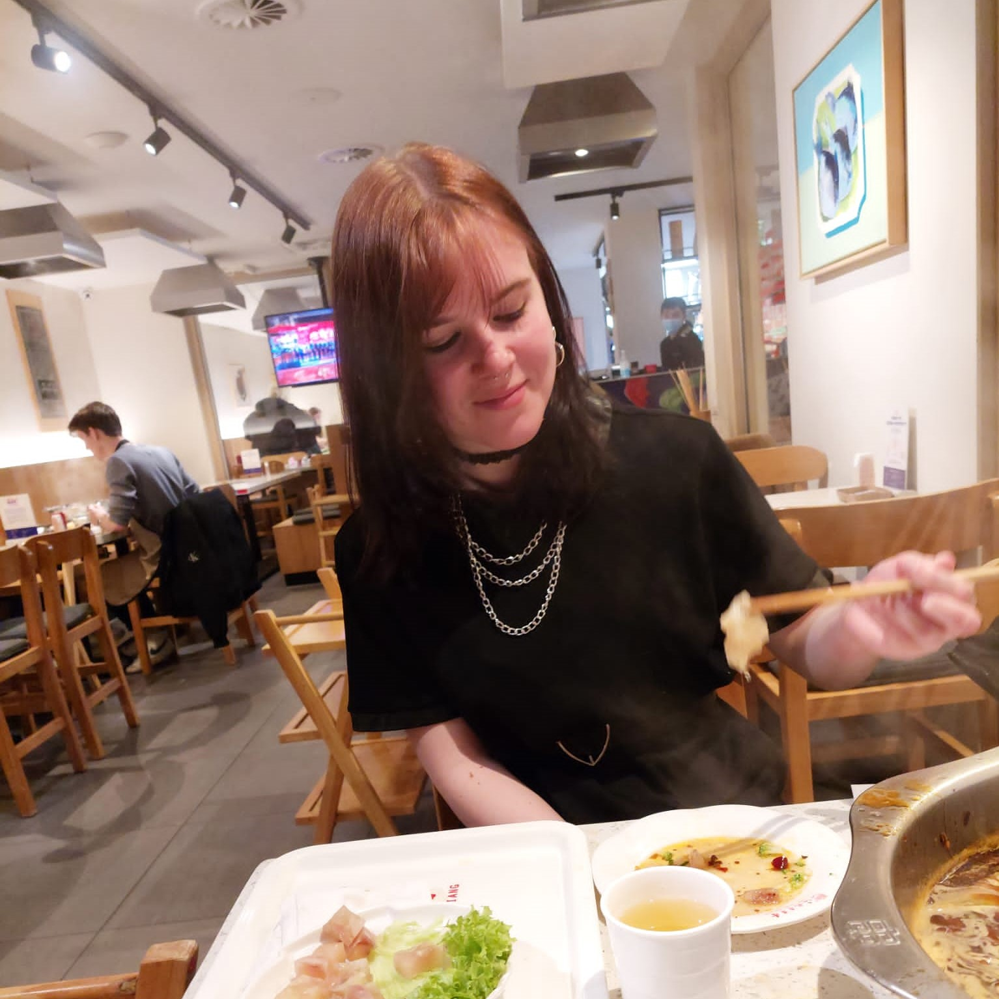

- 
Aspiring Front-End Developer
Hi, I'm Romy. I've been a CMD (Communication and Multimedia Design) student at the Amsterdam University of Applied Sciences since 2020. I was born in the year 2002, and have always liked being creative. Once I visited an open day at CMD and saw it was a very broad study, which included designing, coding and programming, I was pretty much sold right away.
After a while at CMD, I realised the Front-End Development aspect was definitely something I wanted to do in the future. I liked designing my own pages and apps and making them look exactly how I wanted to. Even though I haven't been in the world of coding and programming for that long yet, I know this is what I wanna do in my future. Being creative, coding and programming websites and apps.
I'd like to learn more about the topics I'm interested in and I'm willing to spend time on this.
Some of the media I have gotten comfortable with include:
HTML - CSS - JavaScript - Adobe Illustrator - Adobe XD - Adobe Photoshop